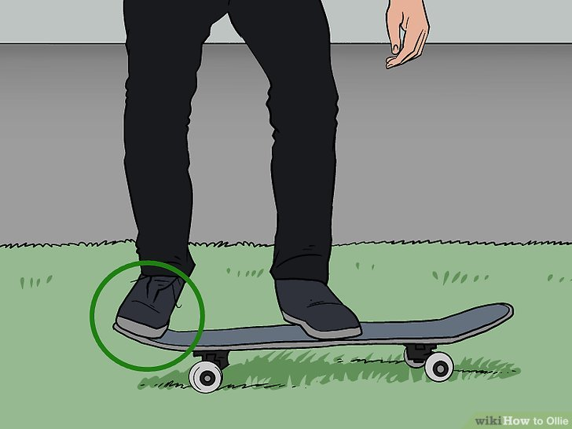
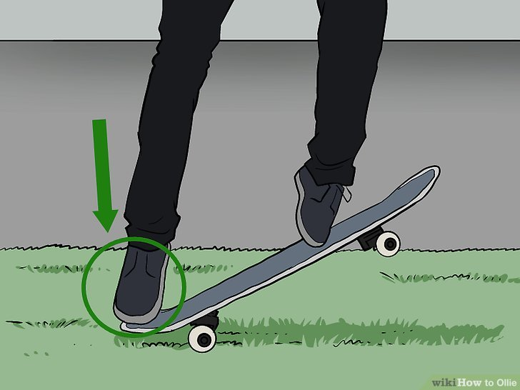
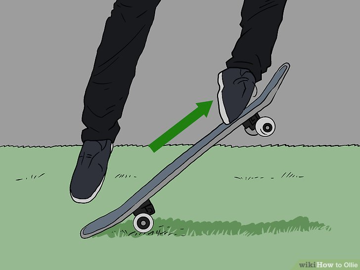

Place your back foot on the tail of the board and your front foot in the middle of the board
Keep your skateboard held in place and use the ball of your back foot to push down on the back of the skateboard. As you do, let your front foot lift up with the board until the back of the board hits the ground.
As you pop the board up, slide your front foot along the length of the board to lift it into the air.
